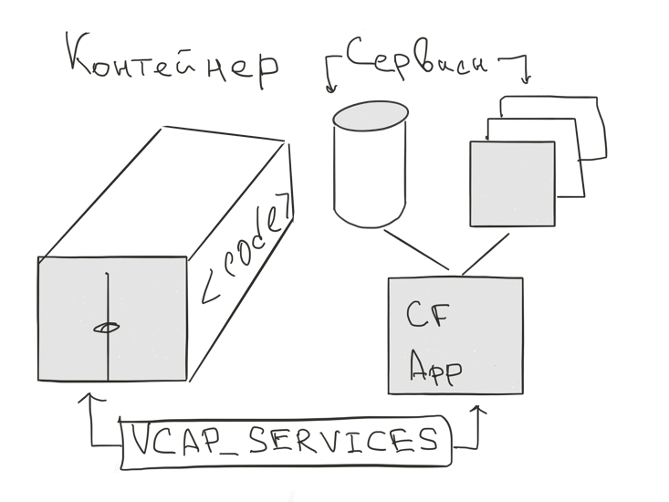

Контейнеры в IBM Bluemix
Пётр Каламбет
IBM
Science and Technology Center
Пётр Каламбет
IBM
Science and Technology Center
Контейнеры на базе Docker
Можно создать:
IBM Bluemix Containers Repository:
registry.ng.bleumix.net
Возможность подключать свои сервисы

Как этим управлять?
dockercf ic - плугин для CF CLI. По сути тот же докер, но
export DOCKER_HOST=tcp://containers-api.ng.bluemix.net:8443 export DOCKER_CERT_PATH=/Users/peter/.ice/certs export DOCKER_TLS_VERIFY=1
ice - IBM Container Environment ToolДополнительные возможности
registry.ng.bluemix.net/<namespace>/<image_name>:tagКонтейнеры